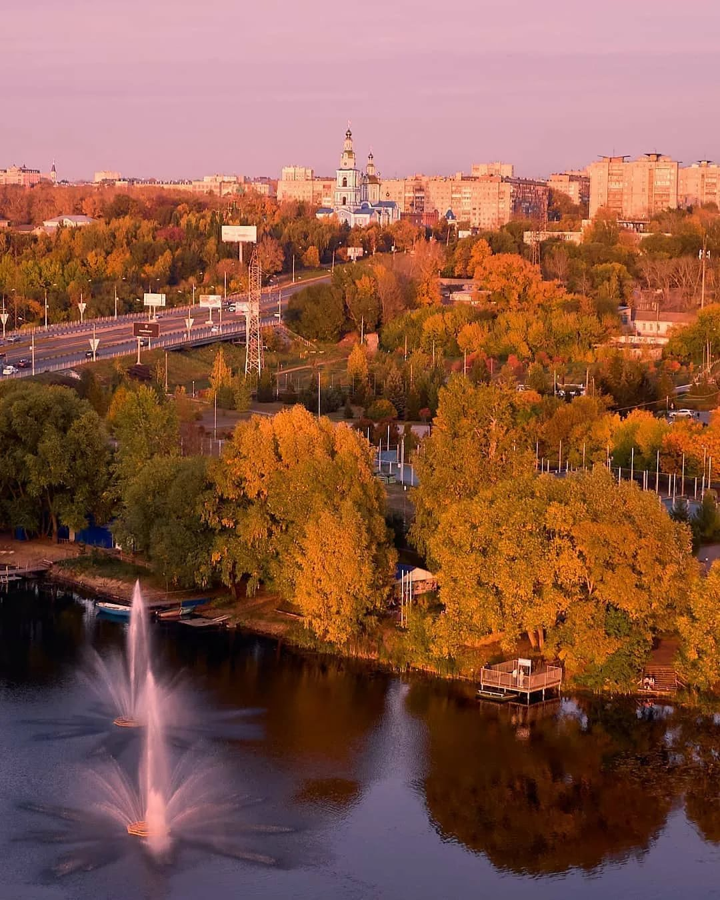
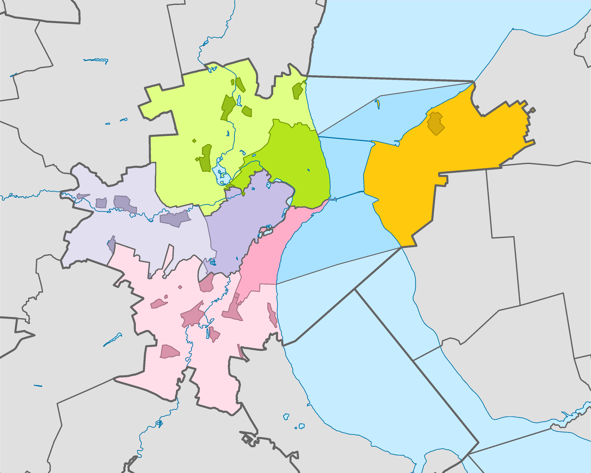
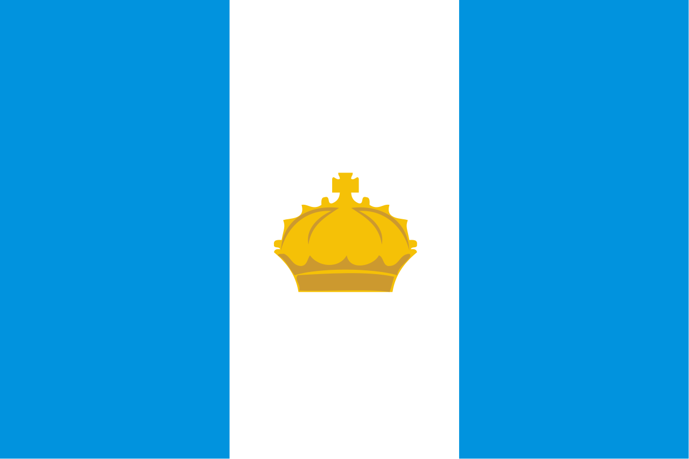

Ульяновск сейчас.
Положение.

Географические координаты центра Ульяновска (соборная площадь перед зданием Администрации области): 54°18’51" северной широты и 48°24’12" восточной долготы. На этой же широте находятся города: Тула (Россия); Гданьск (Польша); Киль (Германия), а на той же долготе — города Волжск, Сызрань, Ершов, Дербент (Россия), Ардебиль, Хамадан, Дизфуль (Иран). Ульяновск расположен на холмистой равнине на высоте 80—160 метров над уровнем моря. Перепады высот в черте города составляют до 60 метров. Причём в правобережной части (центре) Ульяновска лёгкие спуски и подъёмы встречаются чаще, чем в левобережной (Заволжский район). Протяжённость города в меридиональном направлении — 20 км, в широтном — 30 км. Площадь — 316,90 км². Город расположен в лесостепной полосе. Ульяновск — крупный транспортный пункт, лежащий между центральной Россией и Уралом. Соседние региональные центры находятся в трёх—пяти часах езды на автомобиле. Располагается на обоих берегах реки Волга. Помимо этой реки, на территории города протекает несколько других рек, наиболее крупные из которых — Свияга, Сельдь. В центральной части города протекает подземная река Симбирка, впадающая в Свиягу. В городе имеется два родника, которые имеют статус ООПТ— Белый Ключ и Маришка, а также родник Сахарный, который располагается на ООПТ регионального значения «Винновская роща». Продолжительность дня: 21 декабря — 7 часов 19 минут, 21 июня — 17 часов 13 минут.
Климат умеренно континентальный, несколько суше, чем в Москве. В последние годы климат стал мягче, а среднегодовая температура повысилась (до 1991 года составляла 3,5 °C, с начала 2000-х годов — около 5 °C). Также количество пасмурных и облачных дней в году увеличивается. Доминируют слабые и умеренные ветры западного направления. Наименее облачные месяцы в году — апрель и июль, а самый пасмурный — ноябрь. Весна приходит в середине марта, лето порой жаркое, но непродолжительное (обычно с середины мая по конец августа, примерно 3,5 месяца). В мае возможен снег и заморозки. Осень наступает в конце августа, а зима в середине ноября-начале декабря. Ульяновск находится в часовой зоне МСК+1. Смещение применяемого времени относительно UTC составляет +4:00. В соответствии с применяемым временем и географической долготой средний солнечный полдень в Ульяновске наступает в 12:46.
Деление города.

Площадь города в границах городской черты составляет около 300 км² (по другим данным — 316,9 км²), однако территория городского округа г. Ульяновска, в состав которой помимо собственно города входят обширные межселенные территории и акватории, а также 30 сельских населённых пунктов, составляет 628,96 км². Город и весь городской округ официально разделён на 4 внутригородских района: Заволжский, Засвияжский, Ленинский и Железнодорожный. Ульяновск в 1930-е годы делился на центральную часть и образованный 3 января 1935 года Заволжский район. Указом Президиума Верховного Совета РСФСР от 25 февраля 1942 года в центральной части города были образованы Ленинский и Сталинский районы, а Заволжский переименован в Володарский район. Указом Президиума Верховного Совета РСФСР от 4 июня 1954 года путём выделения из Сталинского (позже Засвияжского) района был образован новый Железнодорожный район. Согласно Указу Президиума Верховного Совета РСФСР от 22 ноября 1958 года районное деление в городе было ликвидировано, но указом Президиума Верховного Совета РСФСР от 23 мая 1962 года, в новых границах были воссозданы Ленинский, Заволжский, Засвияжский районы. Указом Президиума Верховного Совета РСФСР от 7 января 1966 года в других границах был вновь образован Железнодорожный район.
Cимволика города.

В соответствии с Уставом города Ульяновска (принят решением Ульяновской городской думы от 14.12.2005 № 202): "Муниципальное образование «город Ульяновск» имеет официальные символы: герб, флаг и гимн. Современный герб города Ульяновска представляет собой «изображение геральдического щита прямоугольной формы, вытянутый по вертикали, в лазоревом поле которого серебряный столб, стоящий на золотой с черным земле в оконечности. На столбе — золотая закрытая корона». Столб на гербе Ульяновска является символом незыблемости народовластия. Венчающая столб корона (венец) символизирует городское самоуправление как проявление власти жителей города. Герб города внесен в Государственный геральдический регистр Российской Федерации — № 231. Флаг города Ульяновска — опозновательно-правовой знак, составленный и употребляемый в соответствии с геральдичесмкими правилами вексиллологии, служащий символом местного самоуправления. Флагом является прямоугольное полотнище с отношением высоты к длине 2:3, состоящее из трех равновеликих вертикальных полос: двух голубого цвета (по краям) и одной белого цвета (в центре). В центре белой полосы — желтая императорская корона, высота которой по крайним точкам составляет 3/11 от высоты полотнища, а ширина по крайним точкам — 1/5 от длины полотнища. Синие полосы на флаге обозначают реки Волгу и Свиягу. Золотистая корона связывает флаг и герб города. Флаг города внесен в Государственный геральдический регистр Российской Федерации — № 232. Гимн города Ульяновска принят в 2008 году на внеочередном заседании Ульяновской Городской Думы. Авторами гимна стали поэт Николай Марянин и композитор Сергей Лямин.
Экономика.
.jpg)
Основа экономики города — это предприятия автомобилестроения, моторостроения, авиастроения, приборостроения, машиностроения и металлообработки, развиты также электроэнергетика, розничная торговля и капитальное строительство. Затем следуют банковская сфера, сфера услуг, туризм, пищевая и лёгкая промышленности. Объём отгруженных товаров собственного производства, выполнено работ и услуг собственными силами обрабатывающие производства за 2010 год — 65,54 млрд рублей. Ульяновск — важный узел Куйбышевской железной дороги (с 1949), имеет один главный (Ульяновск-Центральный) и четыре второстепенных вокзала: Ульяновск-I, Ульяновск-II, Ульяновск-III, «Верхняя Терраса». Рядом с городом расположены два международных аэропорта — Ульяновск-Центральный (ULV) и аэропорт Ульяновск-Восточный (ULY). На правом берегу Волги в Железнодорожном районе находится Ульяновский речной порт (открыт в 1965 году). Два берега Волги связаны между собой двумя мостами, которые являются стратегическими объектами, движение пешеходов по ним запрещено. Общественный транспорт и личные автомобили являются в Ульяновске основными видами транспорта. На 2020 год количество автомобилей в Ульяновске составило 290 автомобилей на тысячу жителей и продолжает расти